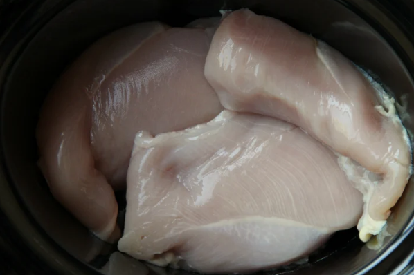
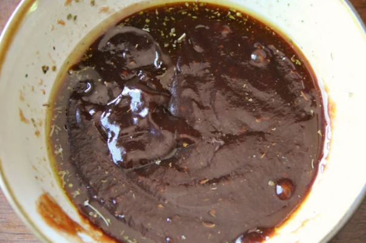
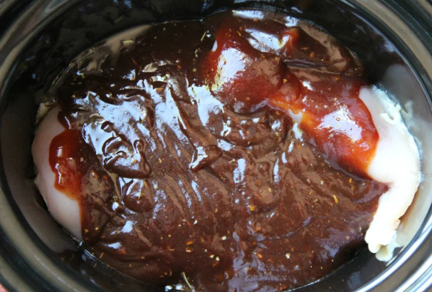
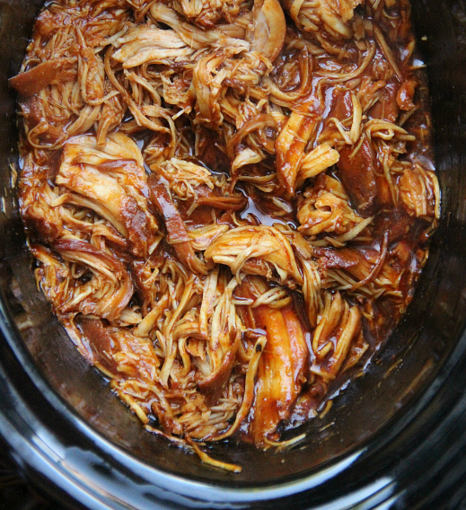

BBQ Chicken Burger
This is the most simple high protein quick prep BBQ chicken recipe. Great for Burgers! You will need a crockpot and a toaster or oven.
Ingredients
2 lbs Boneless Skinless Chicken Breasts
1 cup BBQ Sause of choice
1/4th cup Italian Dressing
1tbsp Worcestershire Sause
6 slices of Pepperjack Cheese
Instructions
Season Chicken
Add chicken breasts to your crockpot and add a small pinch of salt to each.

Prepare Dressing
In a mixing bowl combine BBQ sause, Italian dressing, brown sugar and Worcestershire sause. Stir until well combined.

Add All the Ingredients
Pour over chicken, cover and cook on HIGH for 3-4 hours. Or LOW for 6-8 hours

Shred the Chicken
Once time is up, shread the chicken in the crockpot being sure to stir in the sause to each piece cover for another 10-15 minutes and allow to soak in the flavor.

Heat up the Buns and Cheese
Add the buns of choice to a baking sheet split in half on one side add a slice of pepperjack cheese and add to an oven that is set to broil HIGH for 1-2 minutes checking constantly, once cheese is melted pull out of oven and set to cool.
Assemble and Enjoy
Serve the shredded chicken on buns you just lightly toasted, and enjoy. You can add your own side of choice the best being coleslaw to get that extra vegetables! (Extra Recipe for a delicious Classic Creamy Coleslaw below.)

Finally to store only heat up the buns you are going to eat and store in their original container and use by date. For the chicken store in refridgerator in air tight container for up to 3 days. You can re-heat in microwave or oven with the buns and cheese.
This is the perfect "quick" meal for dinner, an easy set it and forget it. Great for if you never know what to eat for dinner as dinner will be ready during lunch!
An Additional Classic Creamy Coleslaw